<!DOCTYPE HTML>
<html lang="zh-CN">
<head><meta name="generator" content="Hexo 3.8.0">
    <!--Setting-->
    <meta charset="UTF-8">
    <meta name="viewport" content="width=device-width, user-scalable=no, initial-scale=1.0, maximum-scale=1.0, minimum-scale=1.0">
    <meta http-equiv="X-UA-Compatible" content="IE=Edge,chrome=1">
    <meta http-equiv="Cache-Control" content="no-siteapp">
    <meta http-equiv="Cache-Control" content="no-transform">
    <meta name="renderer" content="webkit|ie-comp|ie-stand">
    <meta name="apple-mobile-web-app-capable" content="王永杰的网络日志">
    <meta name="apple-mobile-web-app-status-bar-style" content="black">
    <meta name="format-detection" content="telephone=no,email=no,adress=no">
    <meta name="browsermode" content="application">
    <meta name="screen-orientation" content="portrait">
    <!-- 自定义视频托管 -->
    <script src="https://player.polyv.net/script/polyvplayer.min.js"></script>
    <link rel="dns-prefetch" href="http://wangyongjie.top">
    <!--SEO-->

    <meta name="keywords" content="编辑器">


    <meta name="description" content="一、安装官网：http://www.sublimetext.com/激活码：暂无
二、汉化1. 汉化步骤
首运行安装好了的sublime text 3,点击菜单项“Preferences”
 
...">


<meta name="robots" content="all">
<meta name="google" content="all">
<meta name="googlebot" content="all">
<meta name="verify" content="all">

    <!--Title-->


<title>苹果电脑安装sublime3 | 王永杰的网络日志</title>


    <link rel="alternate" href="/atom.xml" title="王永杰的网络日志" type="application/atom+xml">


    <link rel="icon" href="/favicon.ico">

    


<link rel="stylesheet" href="/css/bootstrap.min.css?rev=3.3.7">
<link rel="stylesheet" href="/css/font-awesome.min.css?rev=4.5.0">
<link rel="stylesheet" href="/css/style.css?rev=@@hash">


    


    <script>
        var _hmt = _hmt || [];
        (function() {
            var hm = document.createElement("script");
            hm.src = "https://hm.baidu.com/hm.js?f42ffe5fed856accbf91820f137dab46";
            var s = document.getElementsByTagName("script")[0];
            s.parentNode.insertBefore(hm, s);
        })();
    </script>


    

</head>

</html>
<!--[if lte IE 8]>
<style>
    html{ font-size: 1em }
</style>
<![endif]-->
<!--[if lte IE 9]>
<div style="ie">你使用的浏览器版本过低，为了你更好的阅读体验，请更新浏览器的版本或者使用其他现代浏览器，比如Chrome、Firefox、Safari等。</div>
<![endif]-->

<body>
    <header class="main-header" style="background-image:url(http://snippet.shenliyang.com/img/banner.jpg)">
    <div class="main-header-box">
        <a class="header-avatar" href="/" title="wangyongjie">
            
        </a>
        <div class="branding">
        	<!--<h2 class="text-hide">Snippet主题,从未如此简单有趣</h2>-->
            
                <h2> 我是谁 我在哪 我在做什么 </h2>
            
    	</div>
    </div>
</header>
    <nav class="main-navigation">
    <div class="container">
        <div class="row">
            <div class="col-sm-12">
                <div class="navbar-header"><span class="nav-toggle-button collapsed pull-right" data-toggle="collapse" data-target="#main-menu" id="mnav">
                    <span class="sr-only"></span>
                        <i class="fa fa-bars"></i>
                    </span>
                    <a class="navbar-brand" href="http://wangyongjie.top">王永杰的网络日志</a>
                </div>
                <div class="collapse navbar-collapse" id="main-menu">
                    <ul class="menu">
                        
                            <li role="presentation" class="text-center">
                                <a href="/"><i class="fa "></i>首页</a>
                            </li>
                        
                            <li role="presentation" class="text-center">
                                <a href="/categories/前端/"><i class="fa "></i>前端</a>
                            </li>
                        
                            <li role="presentation" class="text-center">
                                <a href="/categories/后端/"><i class="fa "></i>后端</a>
                            </li>
                        
                            <li role="presentation" class="text-center">
                                <a href="/categories/工具/"><i class="fa "></i>工具</a>
                            </li>
                        
                            <li role="presentation" class="text-center">
                                <a href="/webnav/"><i class="fa "></i>导航</a>
                            </li>
                        
                            <li role="presentation" class="text-center">
                                <a href="/archives/"><i class="fa "></i>时间轴</a>
                            </li>
                        
                            <li role="presentation" class="text-center">
                                <a href="/message/"><i class="fa "></i>留言板</a>
                            </li>
                        
                            <li role="presentation" class="text-center">
                                <a href="/categories/生活/"><i class="fa "></i>生活</a>
                            </li>
                        
                            <li role="presentation" class="text-center">
                                <a href="/about/"><i class="fa "></i>关于</a>
                            </li>
                        
                    </ul>
                </div>
            </div>
        </div>
    </div>
</nav>
    <section class="content-wrap">
        <div class="container">
            <div class="row">
                <main class="col-md-8 main-content m-post">
                    <p id="process"></p>
<article class="post">
    <div class="post-head">
        <h1 id="苹果电脑安装sublime3">
            
	            苹果电脑安装sublime3
            
        </h1>
        <div class="post-meta">
    
        <span class="categories-meta fa-wrap">
            <i class="fa fa-folder-open-o"></i>
            <a class="category-link" href="/categories/前端/">前端</a>
        </span>
    

    
        <span class="fa-wrap">
            <i class="fa fa-tags"></i>
            <span class="tags-meta">
                
                    <a class="tag-link" href="/tags/编辑器/">编辑器</a>
                
            </span>
        </span>
    

    
        
        <span class="fa-wrap">
            <i class="fa fa-clock-o"></i>
            <span class="date-meta">2017/03/19</span>
        </span>
        
    
</div>
            
            
            <p class="fa fa-exclamation-triangle warning">
                本文于<strong>789</strong>天之前发表，文中内容可能已经过时。
            </p>
        
    </div>
    
    <div class="post-body post-content">
        <h2 id="一、安装"><a href="#一、安装" class="headerlink" title="一、安装"></a>一、安装</h2><p>官网：<a href="http://www.sublimetext.com/" target="_blank" rel="noopener">http://www.sublimetext.com/</a><br>激活码：暂无</p>
<h2 id="二、汉化"><a href="#二、汉化" class="headerlink" title="二、汉化"></a>二、汉化</h2><h3 id="1-汉化步骤"><a href="#1-汉化步骤" class="headerlink" title="1. 汉化步骤"></a>1. 汉化步骤</h3><ol>
<li><p>首运行安装好了的sublime text 3,点击菜单项“Preferences”</p>
<p> 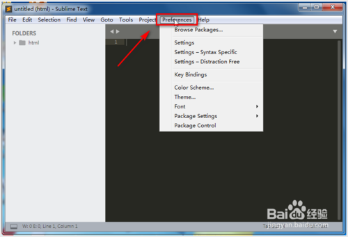</p>
</li>
<li><p>接着点击最底部的功能“Package Control”,当然也可以使用快捷键“Ctrl + Shift + P”键快速调出此功能</p>
<p> 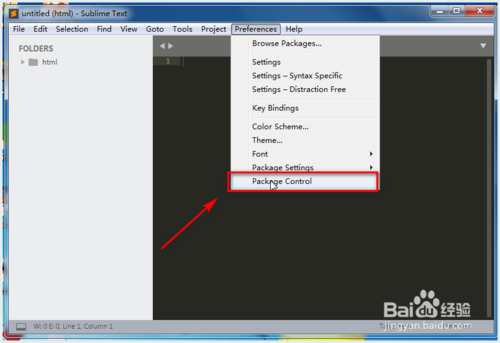</p>
</li>
<li><p>输入关键字“install”点击显示出来的“Install Package”安装插件功能</p>
<p> 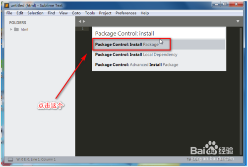</p>
</li>
<li><p>输入设置语言插件包“localiz”关键字即可显示出我们需要的插件“ChineseLocalizations”</p>
<p> 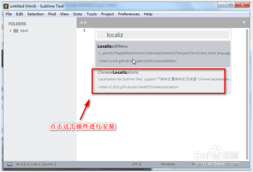</p>
</li>
<li><p>点击插件即可自动下载并且进行安装插件，成功安装后显示的界面如下图</p>
<p> 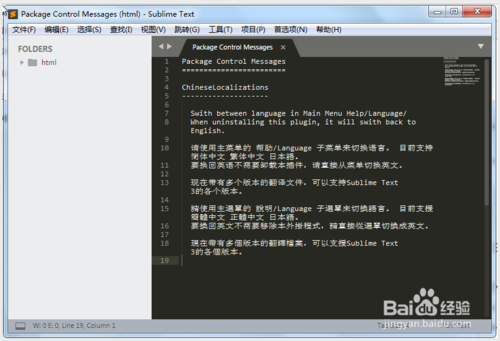</p>
</li>
<li><p>接着在“<strong>帮助</strong>”-“<strong>Language</strong>”下面可以选择其他语言或者增加新的语言哦</p>
<p> 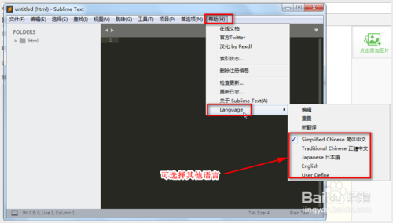</p>
</li>
</ol>
<h3 id="2-遇到的问题"><a href="#2-遇到的问题" class="headerlink" title="2. 遇到的问题"></a>2. 遇到的问题</h3><ol>
<li><p>在使用sublime下载扩展包的过程中，通过ctrl+shift+p打开包管理菜单界面，输入install 选中Install Package并回车，出现There are no packages available for installation的提示，导致安装插件出现问题</p>
<p> 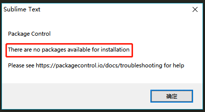</p>
</li>
<li><p>分析原因发现，在利用sublime进行插件下载时，sublime会调用channel_v3.json文件，点击Preferences-&gt;Package Setting-&gt;Package Control -&gt;Setting Default，可以看到该文件是放置在网络中进行读取的，而由于GFW的原因，导致无法读取该文件（但是竟然可以直接访问？？），这也就是导致插件无法下载的原因</p>
<p> 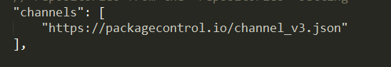</p>
</li>
<li><p>我们在Preferences-&gt;Package Setting-&gt;Package Control -&gt;Setting User 中，可以进行用户设置，我们可以将文件下载后，进行本地访问。首先访问<a href="https://packagecontrol.io/channel_v3.json" target="_blank" rel="noopener">https://packagecontrol.io/channel_v3.json</a> ，将源代码复制后，新建文件为channel_v3.json（也可以从<a href="https://github.com/HBLong/channel_v3_daily" target="_blank" rel="noopener">github</a>中获取源文件），然后在Setting User设置中，添加代码，至此，就可以正常使用install package下载插件</p>
<p> 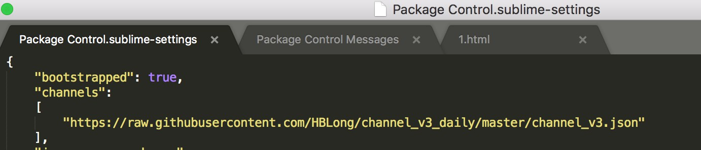</p>
<p> <a href="../../images/苹果电脑安装sublime3/download/Package Control.sublime-package">附件Package Control.sublime-package</a></p>
</li>
</ol>
<h2 id="三、插件安装"><a href="#三、插件安装" class="headerlink" title="三、插件安装"></a>三、插件安装</h2><h3 id="1-Emmet"><a href="#1-Emmet" class="headerlink" title="1. Emmet"></a>1. <a href="https://sublime.wbond.net/packages/Emmet" target="_blank" rel="noopener">Emmet</a></h3><p>功能：编码快捷键，前端必备</p>
<p>简介：Emmet作为zen coding的升级版，对于前端来说，可是必备插件，如果你对它还不太熟悉，可以在其官网（<a href="http://docs.emmet.io/）上看下具体的演示视频。" target="_blank" rel="noopener">http://docs.emmet.io/）上看下具体的演示视频。</a></p>
<p>使用：教程-<a href="http://docs.emmet.io/cheat-sheet/、http://peters-playground.com/Emmet-Css-Snippets-for-Sublime-Text-2/" target="_blank" rel="noopener">http://docs.emmet.io/cheat-sheet/、http://peters-playground.com/Emmet-Css-Snippets-for-Sublime-Text-2/</a></p>
<p><a href="../../images/苹果电脑安装sublime3/苹果电脑安装sublime3插件_1.gif">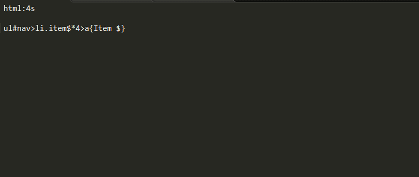</a></p>
<h3 id="2-JSFormat"><a href="#2-JSFormat" class="headerlink" title="2. JSFormat"></a>2. <a href="https://sublime.wbond.net/packages/JsFormat" target="_blank" rel="noopener">JSFormat</a></h3><p>功能：Javascript的代码格式化插件</p>
<p>简介：很多网站的JS代码都进行了压缩，一行式的甚至混淆压缩，这让我们看起来很吃力。而这个插件能帮我们把原始代码进行格式的整理，包括换行和缩进等等，是代码一目了然，更快读懂~</p>
<p>使用：在已压缩的JS文件中，右键选择jsFormat或者使用默认快捷键（Ctrl+Alt+F）</p>
<p><a href="../../images/苹果电脑安装sublime3/苹果电脑安装sublime3插件_2.gif">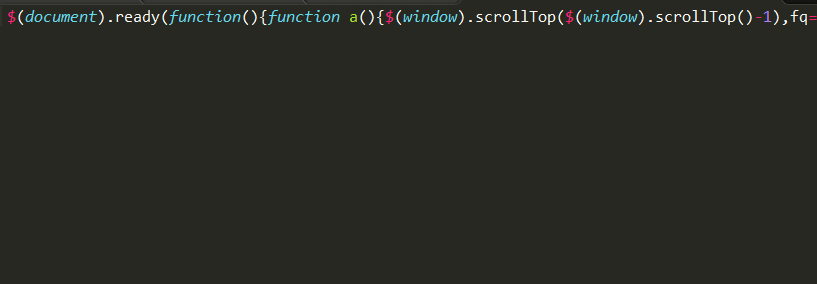</a></p>
<h3 id="3-LESS"><a href="#3-LESS" class="headerlink" title="3. LESS"></a>3. <a href="https://sublime.wbond.net/packages/LESS" target="_blank" rel="noopener">LESS</a></h3><p>功能：LESS高亮插件</p>
<p>简介：用LESS的同学都知道，sublime没有支持less的语法高亮，所以这个插件可以帮上我们</p>
<p>使用：打开.less文件或者设置为less格式</p>
<p><a href="../../images/苹果电脑安装sublime3/苹果电脑安装sublime3插件_3.gif">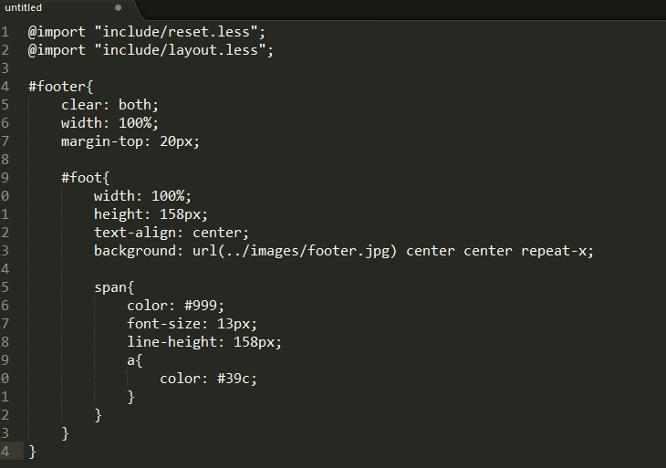</a></p>
<h3 id="4-Less2CSS"><a href="#4-Less2CSS" class="headerlink" title="4. Less2CSS"></a>4. <a href="https://sublime.wbond.net/packages/Less2Css" target="_blank" rel="noopener">Less2CSS</a></h3><p>功能：编译Less</p>
<p>简介：监测到文件改动时，编译保存为.css文件</p>
<p>使用：打开.less文件，编写代码保存即可看到同时生成.css的文件，如果没有则需要安装node。不推荐用这种方法编译，要么用koala，要么就用grunt编译。</p>
<h3 id="5-Alignment"><a href="#5-Alignment" class="headerlink" title="5. Alignment"></a>5. <a href="https://github.com/wbond/sublime_alignment" target="_blank" rel="noopener">Alignment</a></h3><p>功能：”=”号对齐</p>
<p>简介：变量定义太多，长短不一，可一键对齐</p>
<p>使用：默认快捷键Ctrl+Alt+A和QQ截屏冲突，可设置其他快捷键如：Ctrl+Shift+Alt+A；先选择要对齐的文本</p>
<p><a href="../../images/苹果电脑安装sublime3/苹果电脑安装sublime3插件_5.gif">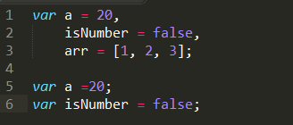</a></p>
<h3 id="6-sublime-autoprefixer"><a href="#6-sublime-autoprefixer" class="headerlink" title="6. sublime-autoprefixer"></a>6. <a href="https://sublime.wbond.net/packages/Autoprefixer" target="_blank" rel="noopener">sublime-autoprefixer</a></h3><p>功能：CSS添加私有前缀</p>
<p>简介：CSS还未标准化，所以要给各大浏览器一个前缀以解决兼容问题</p>
<p>使用：Ctrl+Shift+P，选择autoprefixer即可。需要安装node.js。</p>
<p>其他设置如快捷键请参考：<a href="https://sublime.wbond.net/packages/Autoprefixer" target="_blank" rel="noopener">https://sublime.wbond.net/packages/Autoprefixer</a></p>
<p><a href="../../images/苹果电脑安装sublime3/苹果电脑安装sublime3插件_6.gif">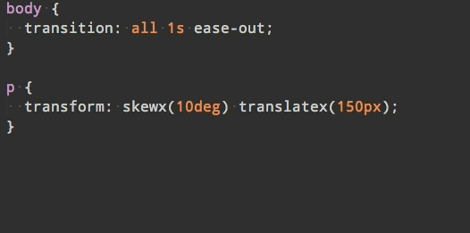</a></p>
<h3 id="7-Clipboard-History"><a href="#7-Clipboard-History" class="headerlink" title="7. Clipboard History"></a>7. <a href="https://github.com/kemayo/sublime-text-2-clipboard-history" target="_blank" rel="noopener">Clipboard History</a></h3><p>功能：粘贴板历史记录</p>
<p>简介：方便使用复制/剪切的内容</p>
<p>使用：</p>
<ul>
<li>Ctrl+alt+v：显示历史记录</li>
<li>Ctrl+alt+d：清空历史记录</li>
<li>Ctrl+shift+v：粘贴上一条记录（最旧）</li>
<li>Ctrl+shift+alt+v：粘贴下一条记录（最新）</li>
</ul>
<p><a href="../../images/苹果电脑安装sublime3/苹果电脑安装sublime3插件_7.gif">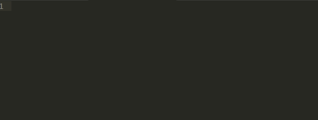</a></p>
<h3 id="8-Bracket-Highlighter"><a href="#8-Bracket-Highlighter" class="headerlink" title="8. Bracket Highlighter"></a>8. <a href="https://github.com/facelessuser/BracketHighlighter" target="_blank" rel="noopener">Bracket Highlighter</a></h3><p>功能：代码匹配</p>
<p>简介：可匹配[], (), {}, “”, ”, <code>&lt;tag&gt;&lt;/tag&gt;</code>，高亮标记，便于查看起始和结束标记</p>
<p>使用：点击对应代码即可</p>
<p><a href="../../images/苹果电脑安装sublime3/苹果电脑安装sublime3插件_8.gif">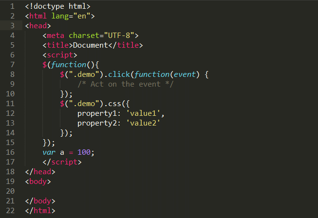</a></p>
<h3 id="9-Git"><a href="#9-Git" class="headerlink" title="9. Git"></a>9. <a href="https://github.com/kemayo/sublime-text-git" target="_blank" rel="noopener">Git</a></h3><p>功能：git管理</p>
<p>简介：插件基本上实现了git的所有功能</p>
<p>使用：<a href="https://github.com/kemayo/sublime-text-git/wiki" target="_blank" rel="noopener">https://github.com/kemayo/sublime-text-git/wiki</a></p>
<p><a href="../../images/苹果电脑安装sublime3/苹果电脑安装sublime3插件_9.png">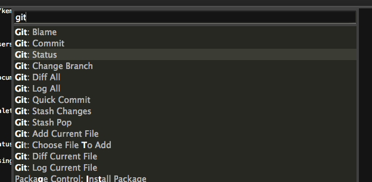</a></p>
<h3 id="10-jQuery"><a href="#10-jQuery" class="headerlink" title="10. jQuery"></a>10. <a href="https://github.com/mrmartineau/Jquery" target="_blank" rel="noopener">jQuery</a></h3><p>功能：jQ函数提示</p>
<p>简介：快捷输入jQ函数，是偷懒的好方法</p>
<p><a href="../../images/苹果电脑安装sublime3/苹果电脑安装sublime3插件_10.gif">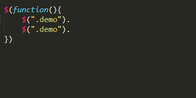</a></p>
<h3 id="11-Doc​Blockr"><a href="#11-Doc​Blockr" class="headerlink" title="11. Doc​Blockr"></a>11. <a href="https://sublime.wbond.net/packages/DocBlockr" target="_blank" rel="noopener">Doc​Blockr</a></h3><p>功能：生成优美注释</p>
<p>简介：标准的注释，包括函数名、参数、返回值等，并以多行显示，手动写比较麻烦</p>
<p>使用：输入/*、/**然后回车，还有很多用法，请参照</p>
<p><a href="https://sublime.wbond.net/packages/DocBlockr" target="_blank" rel="noopener">https://sublime.wbond.net/packages/DocBlockr</a></p>
<p><a href="../../images/苹果电脑安装sublime3/苹果电脑安装sublime3插件_11-1.gif">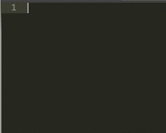</a></p>
<p><a href="../../images/苹果电脑安装sublime3/苹果电脑安装sublime3插件_11-2.gif">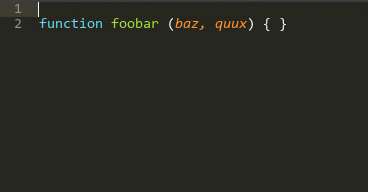</a></p>
<h3 id="12-Color​Picker"><a href="#12-Color​Picker" class="headerlink" title="12. Color​Picker"></a>12. <a href="https://sublime.wbond.net/packages/ColorPicker" target="_blank" rel="noopener">Color​Picker</a></h3><p>功能：调色板</p>
<p>简介：需要输入颜色时，可直接选取颜色</p>
<p>使用：快捷键Windows: ctrl+shift+c</p>
<p><a href="../../images/苹果电脑安装sublime3/苹果电脑安装sublime3插件_12-1.png">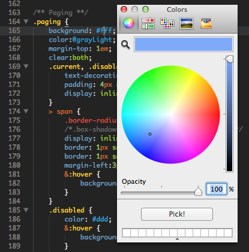</a></p>
<p><a href="../../images/苹果电脑安装sublime3/苹果电脑安装sublime3插件_12-2.png">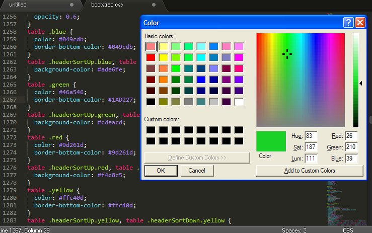</a></p>
<h3 id="13-ConvertToUTF8"><a href="#13-ConvertToUTF8" class="headerlink" title="13. ConvertToUTF8"></a>13. <a href="https://sublime.wbond.net/packages/ConvertToUTF8" target="_blank" rel="noopener">ConvertToUTF8</a></h3><p>功能：文件转码成utf-8</p>
<p>简介：通过本插件，您可以编辑并保存目前编码不被 Sublime Text 支持的文件，特别是中日韩用户使用的 GB2312，GBK，BIG5，EUC-KR，EUC-JP ，ANSI等。ConvertToUTF8 同时支持 Sublime Text 2 和 3。</p>
<p>使用：安装插件后自动转换为utf-8格式</p>
<p><a href="../../images/苹果电脑安装sublime3/苹果电脑安装sublime3插件_13.gif">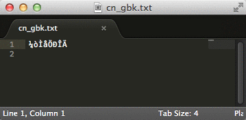</a></p>
<h3 id="14-AutoFileName"><a href="#14-AutoFileName" class="headerlink" title="14. AutoFileName"></a>14. <a href="https://sublime.wbond.net/packages/AutoFileName" target="_blank" rel="noopener">AutoFileName</a></h3><p>功能：快捷输入文件名</p>
<p>简介：自动完成文件名的输入，如图片选取</p>
<p>使用：输入”/”即可看到相对于本项目文件夹的其他文件</p>
<p><a href="../../images/苹果电脑安装sublime3/苹果电脑安装sublime3插件_14.gif">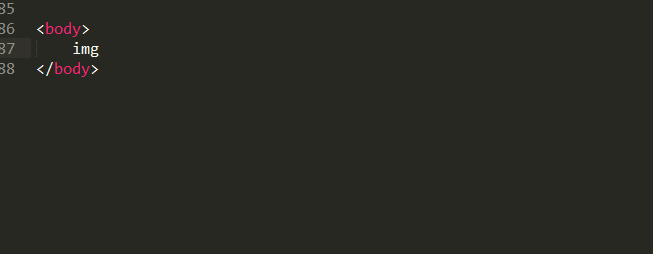</a></p>
<h3 id="15-Nodejs"><a href="#15-Nodejs" class="headerlink" title="15. Nodejs"></a>15. <a href="https://sublime.wbond.net/packages/Nodejs" target="_blank" rel="noopener">Nodejs</a></h3><p>功能：node代码提示</p>
<p>教程：<a href="https://sublime.wbond.net/packages/Nodejs" target="_blank" rel="noopener">https://sublime.wbond.net/packages/Nodejs</a></p>
<p><a href="../../images/苹果电脑安装sublime3/苹果电脑安装sublime3插件_15.png">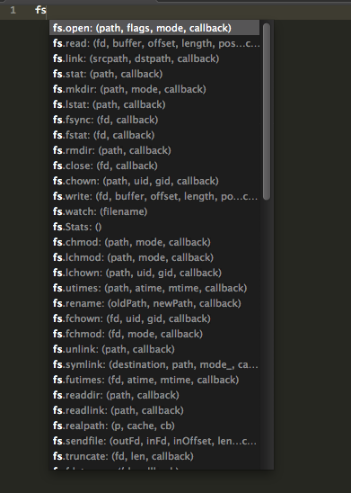</a></p>
<h3 id="16-IMESupport"><a href="#16-IMESupport" class="headerlink" title="16. IMESupport"></a>16. <a href="http://t.cn/zYDBkjL" target="_blank" rel="noopener">IMESupport</a></h3><p>功能：sublime中文输入法</p>
<p>简介：还在纠结 Sublime Text 中文输入法不能跟随光标吗？试试「IMESupport 」这个插件吧！目前只支持 Windows，在搜索等界面不能很好的跟随光标。</p>
<p>使用：Ctrl + Shift + P →输入pci →输入IMESupport →回车</p>
<p><a href="../../images/苹果电脑安装sublime3/苹果电脑安装sublime3插件_16.gif">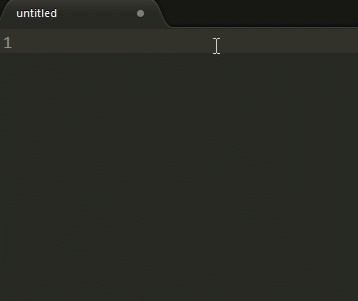</a></p>
<h3 id="17-Trailing-spaces"><a href="#17-Trailing-spaces" class="headerlink" title="17. Trailing spaces"></a>17. <a href="https://github.com/SublimeText/TrailingSpaces" target="_blank" rel="noopener">Trailing spaces</a></h3><p><strong>功能</strong>：检测并一键去除代码中多余的空格</p>
<p><strong>简介</strong>：还在纠结代码中有多余的空格而显得代码不规范？或是有处女座情节？次插件帮你实现发现多余空格、一键删除空格、保存时自动删除多余空格，让你的代码规范清爽起来</p>
<p><strong>使用</strong>：安装插件并重启，即可自动提示多余空格。一键删除多余空格：CTRL+SHITF+T（需配置），更多配置请点击标题。快捷键配置：在Preferences / Key Bindings – User加上代码（数组内）</p>
<table>
<thead>
<tr>
<th>col 1</th>
<th>col 2                                                            </th>
</tr>
</thead>
<tbody>
<tr>
<td>1</td>
<td>{ “keys”: [“ctrl+shift+t”], “command”: “delete_trailing_spaces” }</td>
</tr>
</tbody>
</table>
<p><a href="../../images/苹果电脑安装sublime3/苹果电脑安装sublime3插件_17.gif">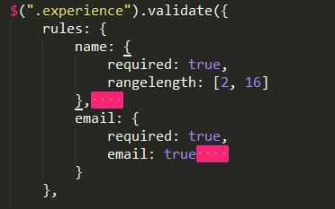</a></p>
<h3 id="18-FileDiffs"><a href="#18-FileDiffs" class="headerlink" title="18. FileDiffs"></a>18. <a href="https://github.com/colinta/SublimeFileDiffs" target="_blank" rel="noopener">FileDiffs</a></h3><p><strong>功能</strong>：强大的比较代码不同工具</p>
<p><strong>简介</strong>：比较当前文件与选中的代码、剪切板中代码、另一文件、未保存文件之间的差别。可配置为显示差别在外部比较工具，精确到行。</p>
<p><strong>使用</strong>：右键标签页，出现FileDiffs Menu或者Diff with Tab…选择对应文件比较即可</p>
<p><a href="../../images/苹果电脑安装sublime3/苹果电脑安装sublime3插件_18.gif">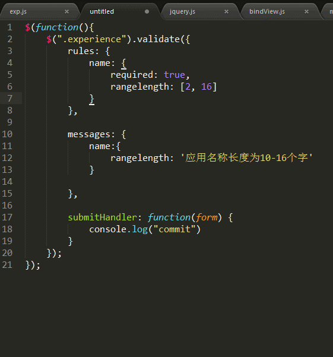</a></p>
<h3 id="19-GBK-Encoding-Support"><a href="#19-GBK-Encoding-Support" class="headerlink" title="19. GBK Encoding Support"></a>19. <a href="https://sublime.wbond.net/packages/GBK%20Encoding%20Support" target="_blank" rel="noopener">GBK Encoding Support</a></h3><p><strong>功能</strong>：中文识别</p>
<p><strong>简介</strong>：Sublime Text 2可识别UTF-8格式的中文，不识别GBK和ANSI，因此打开很多含中文的文档都会出现乱码。可以通过安装插件GBK Support,来识别GBK和ANSI。</p>
<p><strong>使用</strong>：</p>
<ul>
<li>Open a GBK File</li>
<li>Save file with GBK encoding</li>
<li>Change file encoding from utf8 to GBK or GBK to utf8</li>
</ul>
<p><a href="../../images/苹果电脑安装sublime3/苹果电脑安装sublime3插件_19-1.jpg">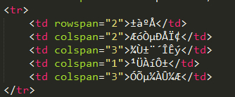</a></p>
<p><a href="../../images/苹果电脑安装sublime3/苹果电脑安装sublime3插件_19-2.jpg">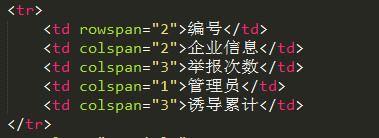</a></p>
<h3 id="20-Git​Gutter"><a href="#20-Git​Gutter" class="headerlink" title="20. Git​Gutter"></a>20. <a href="https://packagecontrol.io/packages/GitGutter" target="_blank" rel="noopener">Git​Gutter</a></h3><p>简介：指示代码中插入、修改、删除的地方</p>
<p>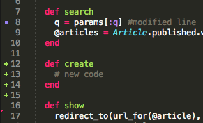</p>
<h2 id="四、自定义代码片段"><a href="#四、自定义代码片段" class="headerlink" title="四、自定义代码片段"></a>四、自定义代码片段</h2><blockquote>
<p>自定义代码片段</p>
</blockquote>
<p>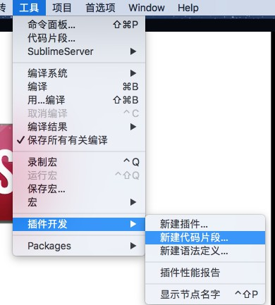<br>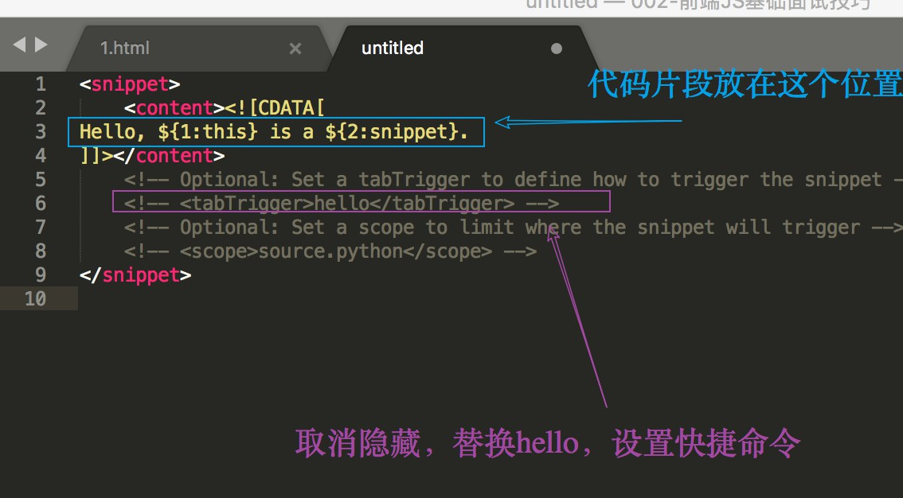</p>
<h2 id="参考："><a href="#参考：" class="headerlink" title="参考："></a>参考：</h2><h3 id="1-解决国内-https-packagecontrol-io-无法访问的问题"><a href="#1-解决国内-https-packagecontrol-io-无法访问的问题" class="headerlink" title="1. 解决国内 https://packagecontrol.io 无法访问的问题"></a>1. <a href="https://github.com/HBLong/channel_v3_daily" target="_blank" rel="noopener">解决国内 https://packagecontrol.io 无法访问的问题</a></h3><h3 id="2-sublime-text3安装-mac-os汉化-常用模块-☆☆☆☆☆"><a href="#2-sublime-text3安装-mac-os汉化-常用模块-☆☆☆☆☆" class="headerlink" title="2. sublime text3安装 mac os汉化/常用模块        ☆☆☆☆☆"></a>2. <a href="https://www.cnblogs.com/Taj-Zhang/p/7385115.html" target="_blank" rel="noopener">sublime text3安装 mac os汉化/常用模块</a>        ☆☆☆☆☆</h3><h3 id="3-解决sublime-text-3使用Install-Package时出现There-are-no-packages-available-for-installation问题"><a href="#3-解决sublime-text-3使用Install-Package时出现There-are-no-packages-available-for-installation问题" class="headerlink" title="3. 解决sublime text 3使用Install Package时出现There are no packages available for installation问题"></a>3. <a href="http://www.cnblogs.com/jellify/p/9522477.html" target="_blank" rel="noopener">解决sublime text 3使用Install Package时出现There are no packages available for installation问题</a></h3><h3 id="4-sublime-text-3中文版如何设置？"><a href="#4-sublime-text-3中文版如何设置？" class="headerlink" title="4. sublime text 3中文版如何设置？"></a>4. <a href="https://jingyan.baidu.com/article/9c69d48fea00ca13c9024e18.html" target="_blank" rel="noopener">sublime text 3中文版如何设置？</a></h3><h3 id="5-实用的sublime插件集合-–-sublime推荐必备插件"><a href="#5-实用的sublime插件集合-–-sublime推荐必备插件" class="headerlink" title="5. 实用的sublime插件集合 – sublime推荐必备插件"></a>5. <a href="http://www.xuanfengge.com/practical-collection-of-sublime-plug-in.html" target="_blank" rel="noopener">实用的sublime插件集合 – sublime推荐必备插件</a></h3><p><br><strong>本文作者</strong>：王永杰<br><strong>本文地址</strong>： <a href="http://wangyongjie.top/blog/10471/">http://wangyongjie.top/blog/10471/</a> <br><strong>版权声明</strong>：本博客所有文章除特别声明外，均采用 <a href="http://creativecommons.org/licenses/by-nc-sa/3.0/cn/" target="_blank" rel="noopener">CC BY-NC-SA 3.0 CN</a> 许可协议。转载请注明出处！</p>

    </div>
    
        <div class="reward" ontouchstart>
    <div class="reward-wrap">赏
        <div class="reward-box">
            
                <span class="reward-type">
                    <b>支付宝打赏</b>
                </span>
            
            
                <span class="reward-type">
                    <b>微信打赏</b>
                </span>
            
        </div>
    </div>
    <p class="reward-tip">一分也是爱</p>
</div>


    
    <div class="post-footer">
        <div>
            
                转载声明：商业转载请联系作者获得授权,非商业转载请注明出处 <a href="http://wangyongjie.top" target="_blank"> http://wangyongjie.top</a>
            
        </div>
        <div>
            
        </div>
    </div>
</article>

<div class="article-nav prev-next-wrap clearfix">
    
        <a href="/blog/61100/" class="pre-post btn btn-default" title="CSS3之text-stroke">
            <i class="fa fa-angle-left fa-fw"></i><span class="hidden-lg">上一篇</span>
            <span class="hidden-xs">CSS3之text-stroke</span>
        </a>
    
    
        <a href="/blog/2635/" class="next-post btn btn-default" title="js中三种定义变量的区别">
            <span class="hidden-lg">下一篇</span>
            <span class="hidden-xs">js中三种定义变量的区别</span><i class="fa fa-angle-right fa-fw"></i>
        </a>
    
</div>


    <div id="comments">
        
	
<div id="lv-container" data-id="city" data-uid="MTAyMC8zNDc5OS8xMTMzNg==">
  <script type="text/javascript">
     (function(d, s) {
         var j, e = d.getElementsByTagName(s)[0];
         if (typeof LivereTower === 'function') { return; }
         j = d.createElement(s);
         j.src = 'https://cdn-city.livere.com/js/embed.dist.js';
         j.async = true;
         e.parentNode.insertBefore(j, e);
     })(document, 'script');
  </script>
</div>


    </div>


                </main>
                
                    <aside id="article-toc" role="navigation" class="col-md-4">
    <div class="widget">
        <h3 class="title">文章目录</h3>
        
            <ol class="toc"><li class="toc-item toc-level-2"><a class="toc-link" href="#一、安装"><span class="toc-text">一、安装</span></a></li><li class="toc-item toc-level-2"><a class="toc-link" href="#二、汉化"><span class="toc-text">二、汉化</span></a><ol class="toc-child"><li class="toc-item toc-level-3"><a class="toc-link" href="#1-汉化步骤"><span class="toc-text">1. 汉化步骤</span></a></li><li class="toc-item toc-level-3"><a class="toc-link" href="#2-遇到的问题"><span class="toc-text">2. 遇到的问题</span></a></li></ol></li><li class="toc-item toc-level-2"><a class="toc-link" href="#三、插件安装"><span class="toc-text">三、插件安装</span></a><ol class="toc-child"><li class="toc-item toc-level-3"><a class="toc-link" href="#1-Emmet"><span class="toc-text">1. Emmet</span></a></li><li class="toc-item toc-level-3"><a class="toc-link" href="#2-JSFormat"><span class="toc-text">2. JSFormat</span></a></li><li class="toc-item toc-level-3"><a class="toc-link" href="#3-LESS"><span class="toc-text">3. LESS</span></a></li><li class="toc-item toc-level-3"><a class="toc-link" href="#4-Less2CSS"><span class="toc-text">4. Less2CSS</span></a></li><li class="toc-item toc-level-3"><a class="toc-link" href="#5-Alignment"><span class="toc-text">5. Alignment</span></a></li><li class="toc-item toc-level-3"><a class="toc-link" href="#6-sublime-autoprefixer"><span class="toc-text">6. sublime-autoprefixer</span></a></li><li class="toc-item toc-level-3"><a class="toc-link" href="#7-Clipboard-History"><span class="toc-text">7. Clipboard History</span></a></li><li class="toc-item toc-level-3"><a class="toc-link" href="#8-Bracket-Highlighter"><span class="toc-text">8. Bracket Highlighter</span></a></li><li class="toc-item toc-level-3"><a class="toc-link" href="#9-Git"><span class="toc-text">9. Git</span></a></li><li class="toc-item toc-level-3"><a class="toc-link" href="#10-jQuery"><span class="toc-text">10. jQuery</span></a></li><li class="toc-item toc-level-3"><a class="toc-link" href="#11-Doc​Blockr"><span class="toc-text">11. Doc​Blockr</span></a></li><li class="toc-item toc-level-3"><a class="toc-link" href="#12-Color​Picker"><span class="toc-text">12. Color​Picker</span></a></li><li class="toc-item toc-level-3"><a class="toc-link" href="#13-ConvertToUTF8"><span class="toc-text">13. ConvertToUTF8</span></a></li><li class="toc-item toc-level-3"><a class="toc-link" href="#14-AutoFileName"><span class="toc-text">14. AutoFileName</span></a></li><li class="toc-item toc-level-3"><a class="toc-link" href="#15-Nodejs"><span class="toc-text">15. Nodejs</span></a></li><li class="toc-item toc-level-3"><a class="toc-link" href="#16-IMESupport"><span class="toc-text">16. IMESupport</span></a></li><li class="toc-item toc-level-3"><a class="toc-link" href="#17-Trailing-spaces"><span class="toc-text">17. Trailing spaces</span></a></li><li class="toc-item toc-level-3"><a class="toc-link" href="#18-FileDiffs"><span class="toc-text">18. FileDiffs</span></a></li><li class="toc-item toc-level-3"><a class="toc-link" href="#19-GBK-Encoding-Support"><span class="toc-text">19. GBK Encoding Support</span></a></li><li class="toc-item toc-level-3"><a class="toc-link" href="#20-Git​Gutter"><span class="toc-text">20. Git​Gutter</span></a></li></ol></li><li class="toc-item toc-level-2"><a class="toc-link" href="#四、自定义代码片段"><span class="toc-text">四、自定义代码片段</span></a></li><li class="toc-item toc-level-2"><a class="toc-link" href="#参考："><span class="toc-text">参考：</span></a><ol class="toc-child"><li class="toc-item toc-level-3"><a class="toc-link" href="#1-解决国内-https-packagecontrol-io-无法访问的问题"><span class="toc-text">1. 解决国内 https://packagecontrol.io 无法访问的问题</span></a></li><li class="toc-item toc-level-3"><a class="toc-link" href="#2-sublime-text3安装-mac-os汉化-常用模块-☆☆☆☆☆"><span class="toc-text">2. sublime text3安装 mac os汉化/常用模块        ☆☆☆☆☆</span></a></li><li class="toc-item toc-level-3"><a class="toc-link" href="#3-解决sublime-text-3使用Install-Package时出现There-are-no-packages-available-for-installation问题"><span class="toc-text">3. 解决sublime text 3使用Install Package时出现There are no packages available for installation问题</span></a></li><li class="toc-item toc-level-3"><a class="toc-link" href="#4-sublime-text-3中文版如何设置？"><span class="toc-text">4. sublime text 3中文版如何设置？</span></a></li><li class="toc-item toc-level-3"><a class="toc-link" href="#5-实用的sublime插件集合-–-sublime推荐必备插件"><span class="toc-text">5. 实用的sublime插件集合 – sublime推荐必备插件</span></a></li></ol></li></ol>
        
    </div>
</aside>

                
            </div>
        </div>
    </section>
    <footer class="main-footer">
    <div class="container">
        <div class="row">
        </div>
    </div>
</footer>

<a id="back-to-top" class="icon-btn hide">
	<i class="fa fa-chevron-up"></i>
</a>


    <div class="copyright">
    <div class="container">
        <div class="row">
            <div class="col-sm-12">
                <div class="busuanzi">
    
</div>

            </div>
            <div class="col-sm-12">
                <span>Copyright &copy; 2019
                </span> |
                <span>
                    Powered by <a href="//hexo.io" class="copyright-links" target="_blank" rel="nofollow">Hexo</a>
                </span> |
                <span>
                    Theme by <a href="//github.com/shenliyang/hexo-theme-snippet.git" class="copyright-links" target="_blank" rel="nofollow">Snippet</a>
                </span>
            </div>
        </div>
    </div>
</div>


<script src="/js/app.js?rev=@@hash"></script>

</body>
</html>